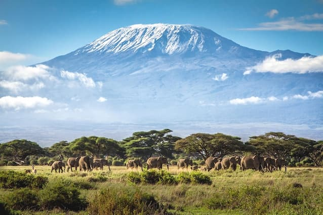

Baraka Gosbert Mujuni
About Me
Hello! My name is Baraka Gosbert Mujuni. I enjoy learning web development, creating websites, and improving my programming skills. I currently live in Your Country and enjoy technology, reading, and outdoor activities.
My Country

Tanzania is known for its beautiful landscapes with the highest and free standing mountain in the world mt.kilimanjaro, rich culture, and welcoming people. I enjoy sharing information about my country and learning about others around the world.